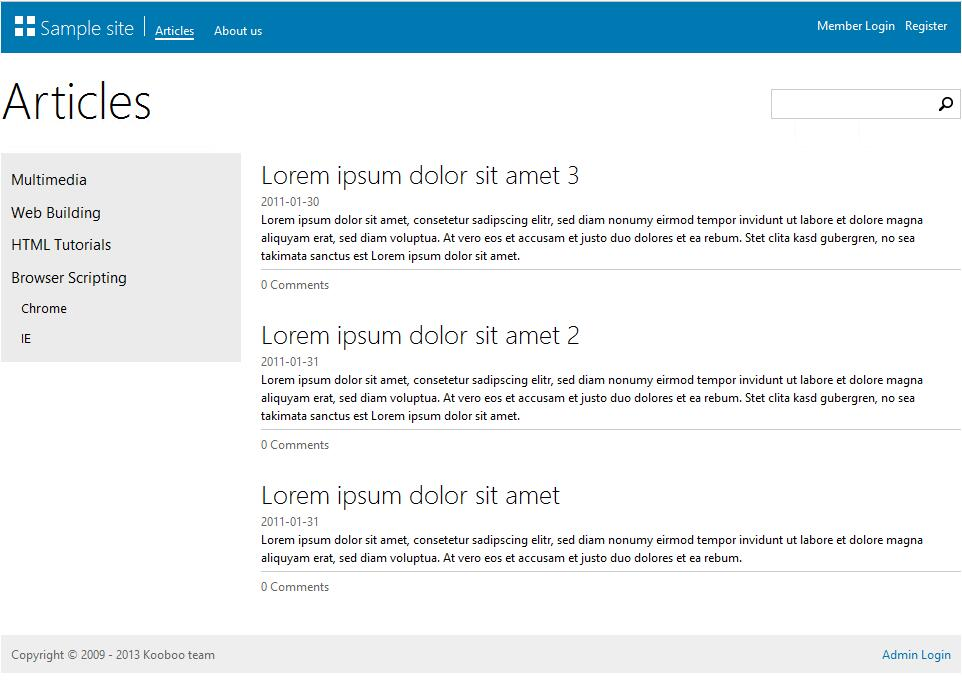
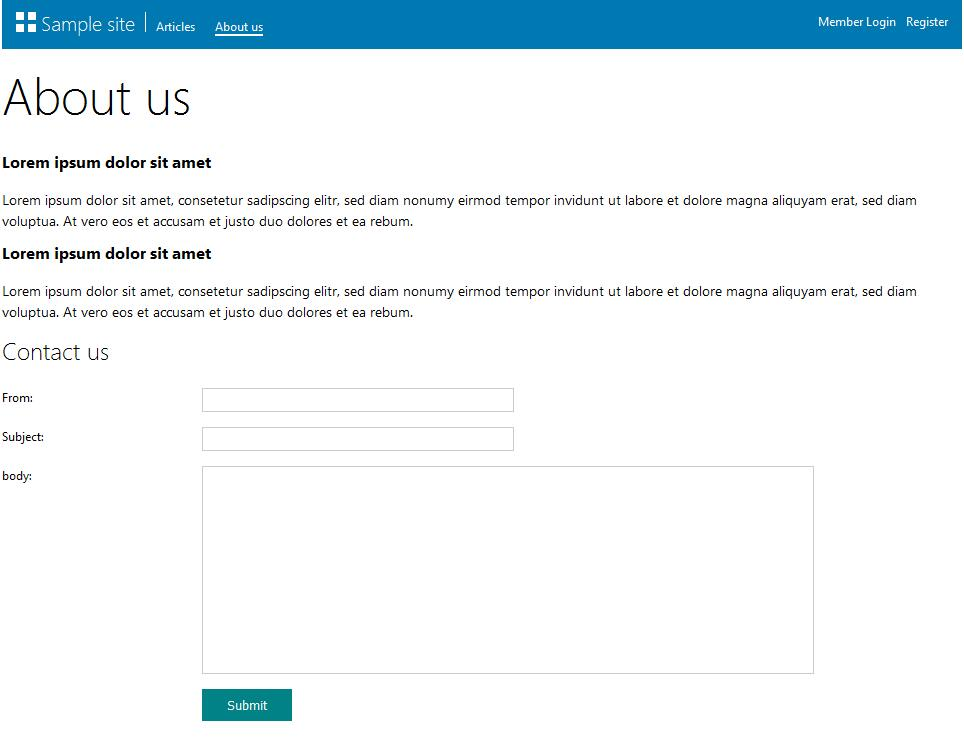
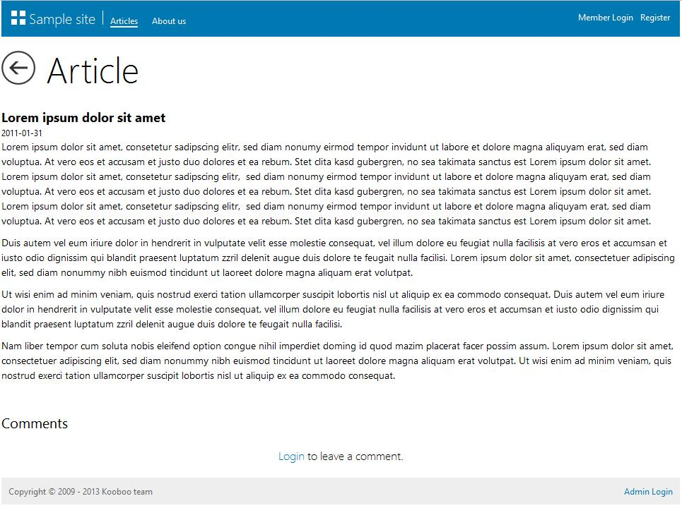
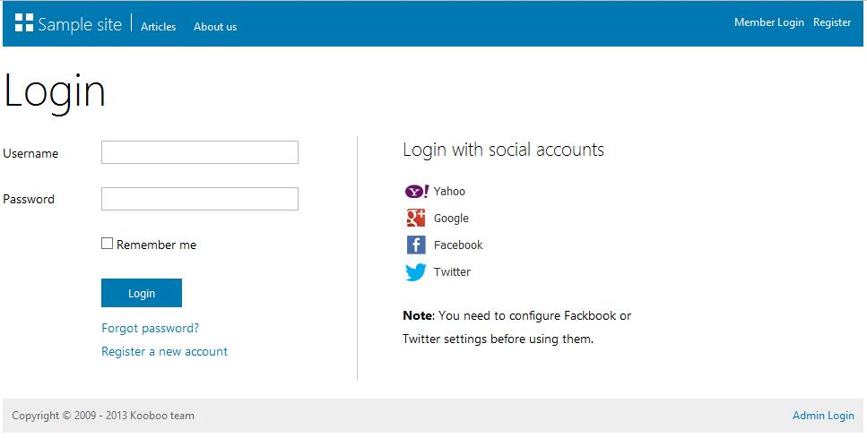
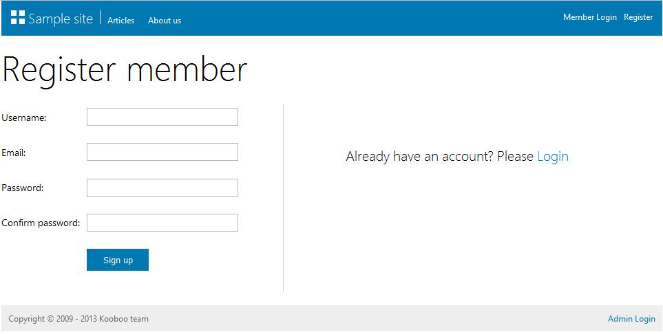
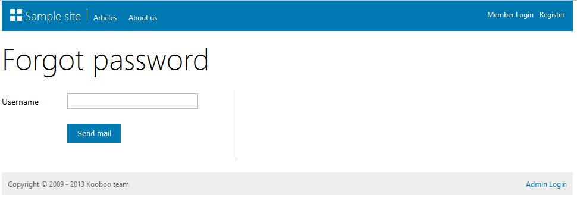

初识SampleSite 2016-12-31 SampleSite是什么简单说SampleSite是Kooboo CMS默认自带的一个简单的示例站点，初次进入Kooboo CMS后台后第一眼看到的就是SampleSite。虽说是一个简单的示例站点，但是，麻雀虽小五脏俱全，从SampleSite入手是一个很好的入门方式。 SampleSite前台概览      SampleSite后台概览 入门指南